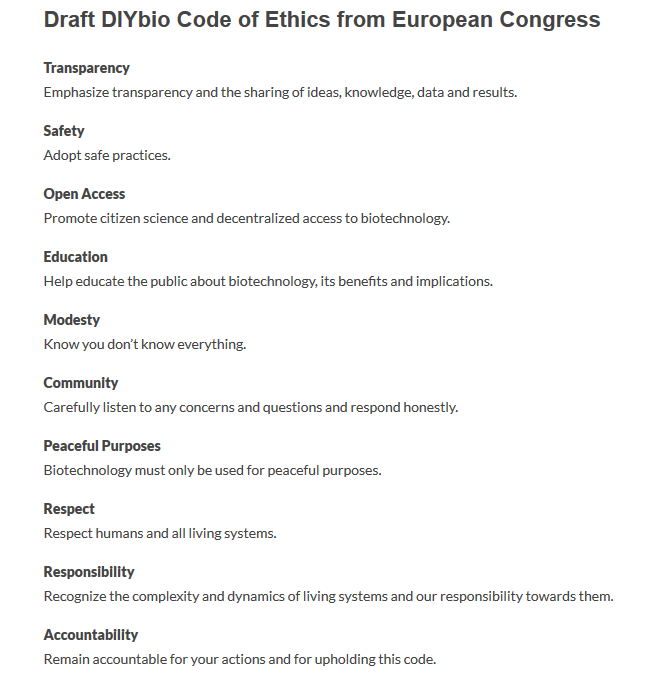
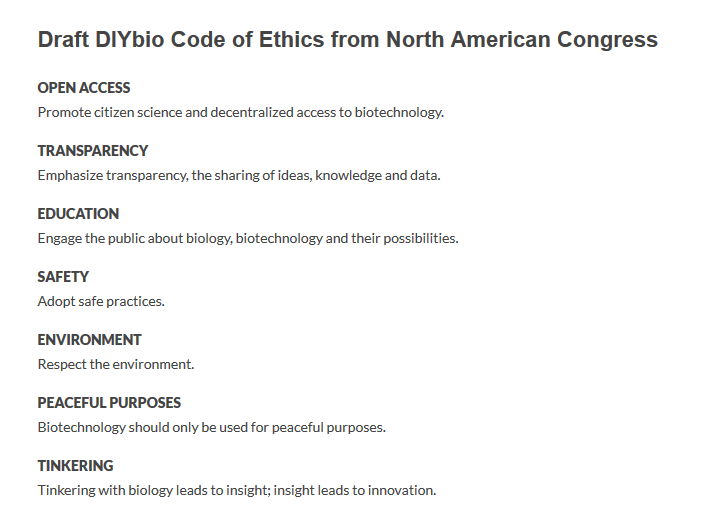
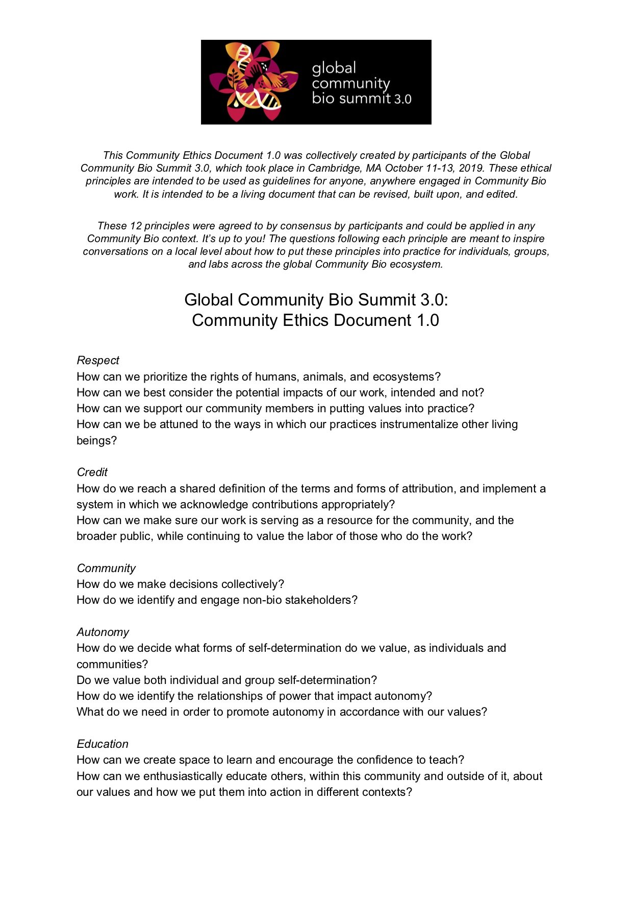
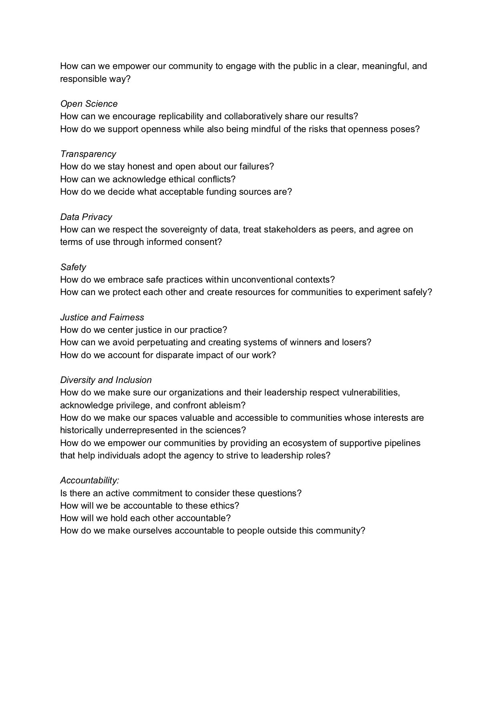

5. Codes of Conduct, Human Subjects, and Data Protection
Codes of Conduct
From its earliest beginnings the DIYbio community has incorporated safety, security, and responsible conduct into its ethical principles. The first iteration of a code of conduct was developed in 2011 when there were only a handful of community laboratories (see below). It was They were a starting point, enabling each community lab or DIYbio group to adapt and evolve the codem over time.
 
As the community has grown, the codes have grown with it. In 2019, the Global Community Biosummit developed and agreed to by consensus a community ethics document thatcommunity labs should incorporate into their own practices and continue to evolve over time .
 
Human Subjects and Responsible Research (Including Public Outreach)
When conducting sponsored human subjects research at institutions (e.g., universities) you often must receive institutional approval prior to starting. In the U.S., this is typically done through the university Institutional Review Board (IRB), and private for-hire IRB's exist for research conducted outside universities. Similar systems exist outside the U.S. The IRB's role is to advocate for and protect human subjects who participate in research by reviewing research proposals and methods with a lens towards ethics, legal compliance, and social justice. In many instances, this type of review is required by the sponsor of the research, and many journals will not publish work that has not been reviewed/approved by such a review board.
Research ethics and its regulations will vary from country to country and you should investigate what specific rules/regulations might cover your experiments and public outreach events. It's important to remember that many of the outreach activities described in this chapter may require certain approvals or consent from individuals before they can participate. When designing/conducting your public outreach events, group projects and/or educational activities, consider issues such as informed voluntary participation, confidentiality, anonymity, and minimising harm.
While most public outreach activities a community lab conducts areis not subject to human subjects research or similar type of approvals, we recommend that you think about developing a review process and consent form to both protect your lab from liabilities but more importantly to maintain ethical research practices. _If you are collecting data (including spit) from a minor, you will need to obtain consent from their legal guardian(s)._The iGEM Human Practices page is a useful resource, and we have reproduced some of that information below.
An informed consent form should address the following key points:
What information is being collected?
- Who is collecting it? You will want to provide contact details for your lab.
- How is it being collected?
- Why is it being collected?
- How will it be used?
- Who will it be shared with?
- What measures will be taken to ensure the participants' privacy and confidentiality?
- How will participating affect the individuals concerned?
You should present in clear and plain language that:
- Their participation is voluntary.
- They have the right to terminate their participation at any point of the data collection process without any adverse consequences.
For most projects you could simply ask for a verbal consent, but depending on the type of project and data you might collect (DNA, etc.), you may want to have a signed consent form. Either way a participant must confirm that:
- They have had the chance to ask any questions regarding the project.
- They understand that their participation is voluntary and that they could terminate their contribution at any time without consequences.
- They agree to participate in the study and (if applicable) they agree to be recorded.
If you plan on publishing your work you may be required to follow additional specific research ethics guidelines. We recommend you anonymise any data if you plan on publishing your work both on- and offline, unless specific permission to use their name has been obtained.
General Data Protection Regulation (GDPR) Compliance
The iGEM Human Practices wiki is a great resource explaining the EU General Data Protection Regulation (GDPR), as well as other information regarding research ethics. We have reproduced iGEM's guidance (in part) here:
Since May 2018 the General Data Protection Regulation (GDPR) has been enforced by the European Union (EU), which has a global effect. This law gives EU citizens more control over their data. You may find that GDPR requirements largely mirror a general norm of good practice in research data protection in different regions. However, it is important to highlight that the GDPR is wider in scope. You should familiarize yourself with the GDPR if you are conducting outreach experiments relating to citizens of the EU. Serious violations of the GDPR may lead to penalties.
The Scope of GDPR
The GDPR applies to "personal data" and "special category personal data."
Personal data is data about living people from which they can be identified, either directly or indirectly. Examples of personal data include name, location data, an online identifier, or one or more factors specific to the physical, physiological, genetic, mental, economic, cultural, or social identity of that person. We want to draw your attention to the fact that personal data that has been 'pseudonymised' can fall within the scope of the GDPR depending on how difficult it is to attribute the pseudonym to a particular individual.
Special category personal data refers to sensitive personal data revealing racial or ethnic origin, political opinions, religious, or philosophical beliefs, or trade union membership, and the processing of genetic data, biometric data for the purpose of uniquely identifying a person, data concerning health, or other biological characteristics.
The GDPR prescribes 7 principles relating to the processing of personal data.
- Lawfulness, fairness, and transparency : Data should be processed lawfully, fairly, and with the data subject's (e.g., your interviewees' or survey participants') full knowledge and consent. (Please read the Informed Consent section.)
- Purpose limitation : Data should be collected for specified, explicit, and legitimate purposes and only used for these purposes.
- Data minimisation : Data should be adequate, relevant, and limited to what is necessary in relation to the purposes of your project.
- Accuracy : Data should be accurate and, where necessary, kept up to date; Inaccurate data, once detected, should be erased or rectified without delay.
- Storage limitation : Data you collected can be stored for a period after the Jamboree to allow traceability (e.g., we recommend no longer than 6 months), after which personal data should be safely destroyed or deleted.
- Integrity and confidentiality : Data should be processed in a manner that ensures appropriate security of the personal data. For example, data collected from interviews or focus groups studies should be stored in a password protected computer which protects against unauthorised or unlawful access. Appropriate measures, such as a password-protected backup drive, should also be implemented to protect against accidental loss, destruction, or damage.
- Accountability : This principle requires you to take responsibility for what you do with personal data and how you comply with the other principles. You must have appropriate measures and records (e.g., signed informed consent) in place to demonstrate your compliance.
Special category personal data : In addition to the above 7 principles, if you are collecting and processing special category personal data, extra oversight is required to ensure the necessity and legitimacy of your planned data collection and that all data will be properly protected. To demonstrate your compliance, you will need to have the following:
- Institutional Research Ethics Committee review and approval
- Data minimisation and minimisation of recruitment numbers
- Anonymisation and other technical safeguards against accidental disclosure and loss or corruption of research data
- Institutional Research Ethics Committee review and approval
Depending on the nature of sensitive data you collect, you may also need additional governance checks (including Health Research Authority assessment for health research). While we recognize that most community labs will not have institutional resources to assist them in navigating GDPR issues, we recommend consulting with a local institutional administration official for guidance whenever possible.
Human Subjects Research and Other Activities Involving the Public
There are many ways that you need to be careful with how you interact with humans in your project even if you are not collecting or experimenting with biomedical samples from humans. iGEM teams often engage with communities to understand broader social concerns, much of which involves talking with people, collecting information, analyzing it, and presenting it before judges at the Jamboree and on your wikis. This type of human subjects research is social science research.
In many cases social science research (such as surveys and data collection from interviews) requires pre-approval from review boards at your local institution and must comply with national guidelines. This oversight is designed to ensure ethical conduct, including issues such as privacy, voluntary participation, informed consent, and protection of vulnerable populations.
It is iGEM's policy that all human subjects research conducted by teams must be done in accordance with that team's institutional and national guidelines, and teams must demonstrate their awareness of these guidelines and their adherence to them. Teams are reminded they must attest to compliance via their safety forms.
Copies of national guidelines, for many countries, may be foundhere. Many universities have an internal "Institutional Review Board" (IRB) or "Research Ethics Committee" (REC) that is responsible for approving human subjects research at that institution. Because of the time it can take to fill out forms and receive IRB/REC approval (often weeks or months), teams are strongly advised to begin the approval process as soon as possible.
Demonstration of adherence to institutional policies should be seen as minimum requirements, and we expect teams to go above and beyond in demonstrating their commitments to responsible and ethical conduct. For example, for teams that do not have established review committees at their institutions (e.g., some community lab teams), we expect them to consult with the international and national policies and other resources and experts linked on theSafety Hub andHuman Practices Hub (see theHow to Succeed section of the Hub).